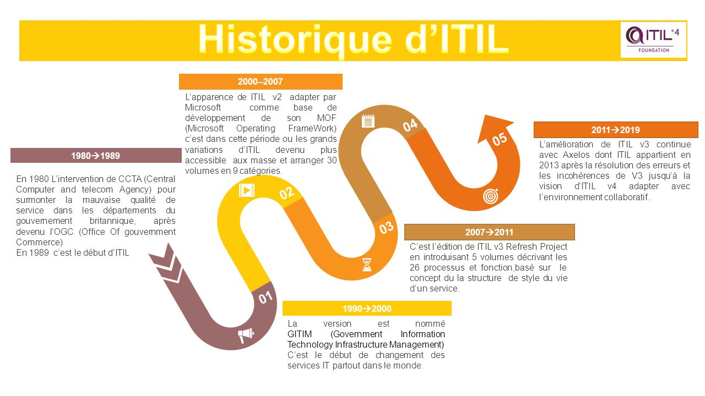
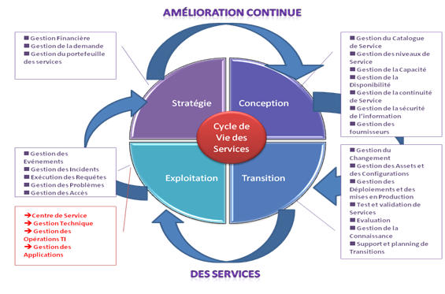
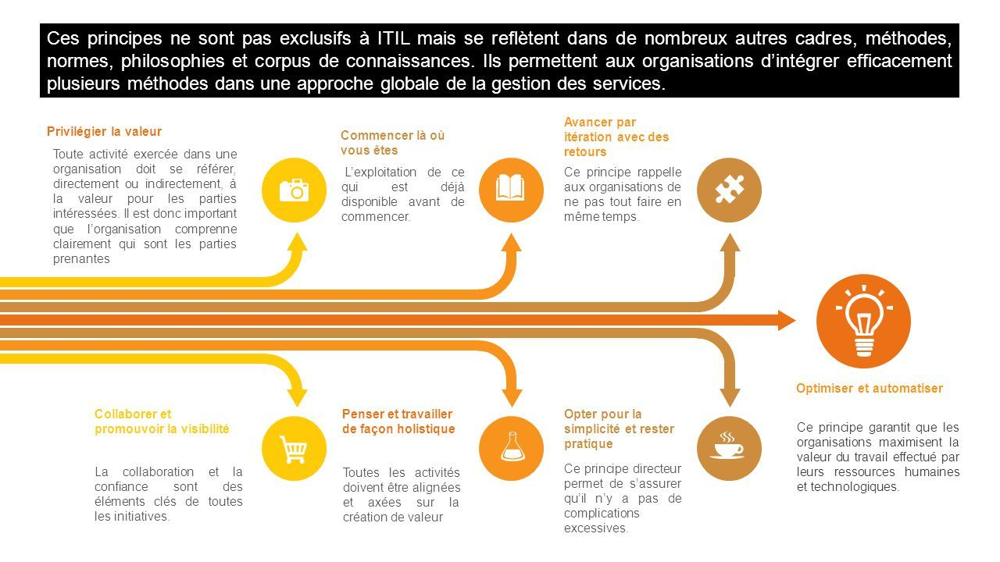
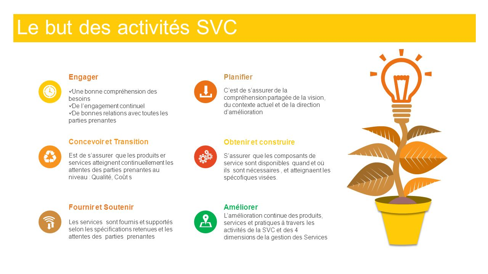

ITIL
Information Technology Infrastructure Library
Conçu dans les années 1980 (1986).
En Grande-Bretagne, Margaret Tatcher.
Suite à la crise économique et financière.
Référentiel qui regroupe les bonnes pratiques dans un SI.
- ITILv1 → 1989 (42 livres)
- ITILv2 → 1999 (8 livres)
- ITILv3 → 2007 & 2011 (5 livres)
- ITILv4 → 2019 (4 livres)
- Stratégie
- Gestion des services
- Valeur pour les parties prenantes
- Haute vélocité dans l'IT

5 étapes du cycle de vie d'un service
Stratégie des services
Conception des services
Transition des services
Exploitation des services
Amélioration continue des services

Principes directeurs

